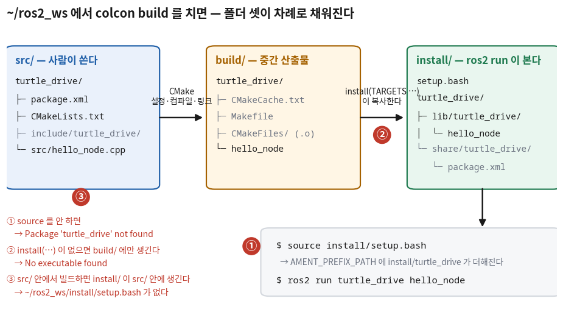
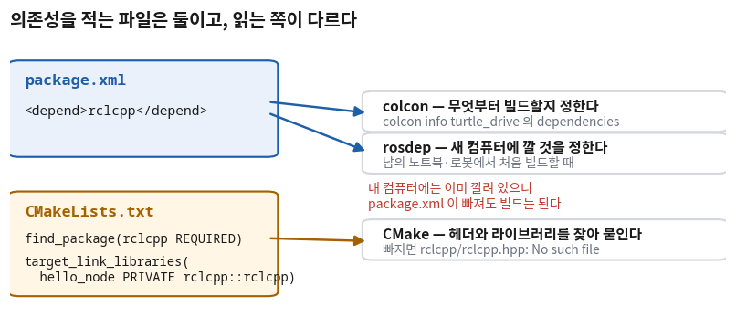
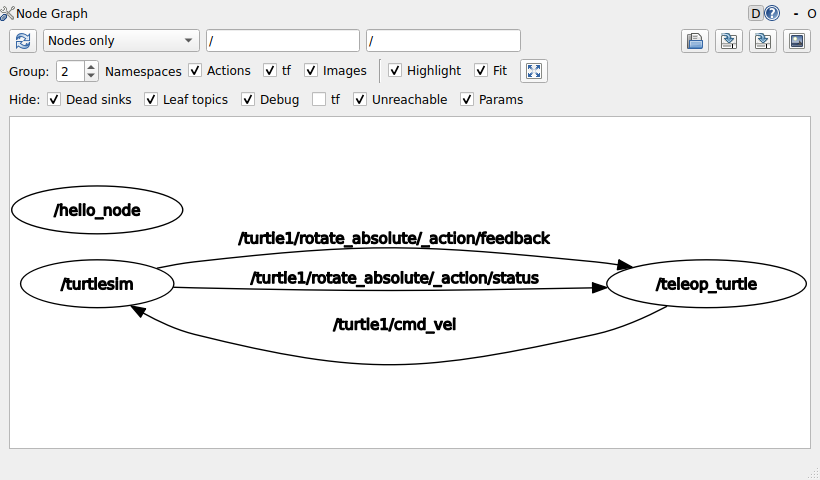

ROS 2 패키지와 노드 (ament_cmake)
- ROS 2 패키지는 8회에서 만든 CMake 프로젝트와 무엇이 같고 무엇이 다른가?
package.xml은 왜 따로 있나?CMakeLists.txt만으로는 안 되나?- 노드는 C++ 코드에서 어떻게 생겼나? 왜 클래스로 만드나?
- 빌드는 성공했는데
ros2 run이 못 찾는다. 어디를 보면 되나?
ROS 2의 빌드는 새로운 게 아니다. 8회에서 배운 CMake에 규칙 몇 개가 더 붙은 것이다.
add_executable로 실행 파일을 만들고 target_link_libraries로 남의 라이브러리를 붙이는 것 —
8회의 scan_tools/에서 한 일이 오늘도 그대로 나온다.
달라지는 것은 그 앞뒤에 붙는 몇 줄과, cmake를 직접 치는 대신 colcon build를 친다는 것 정도다.
오늘은 ~/ros2_ws/src 안에 turtle_drive라는 패키지를 하나 만든다.
이 패키지는 22회까지 네 회차 동안 자란다. 오늘 거기에 넣는 것은 실행 파일 하나, hello_node다.
로그 한 줄을 찍고 끝나는 프로그램에서 시작해, rclcpp::Node를 상속한 클래스가 되어 ros2 node list에 이름이 뜨는 데까지 간다.
거북이를 움직이는 일(발행·구독·타이머)은 20회 몫이라 오늘은 하지 않는다.
그리고 이 회차의 절반은 안 될 때를 다룬다.
ros2 run이 실행 파일을 못 찾는 경우는 대개 세 가지 중 하나이고, 세 가지 모두 실제로 재현해 오류 메시지를 받아 두었다.
메시지를 한 번 봐 두면 나중에 같은 글자를 만났을 때 어디를 볼지 바로 떠오른다.
한 장 요약
무엇을 먼저 볼지: 오른쪽 열만 읽어도 받은 패키지를 검사할 수 있다. 가운데 열은 그 줄이 파일에서 어떻게 생겼는지다.
| 용어 | 파일·명령에서 이렇게 보인다 | 이것만 알면 된다 |
|---|---|---|
패키지 · ros2 pkg create | ros2 pkg create turtle_drive --build-type ament_cmake --dependencies rclcpp | 작업공간 src/ 안에서 친다. 패키지 이름을 맨 앞에 쓴다 |
package.xml · <depend> | <depend>rclcpp</depend> | 이 패키지가 무엇에 기대는지를 colcon·rosdep에게 알린다 |
find_package · target_link_libraries | target_link_libraries(hello_node PRIVATE rclcpp::rclcpp) | 8회와 같은 줄이다. 같은 의존성을 CMake에게알린다. 두 파일 모두에 있어야 한다 |
install(TARGETS …) | install(TARGETS hello_node DESTINATION lib/${PROJECT_NAME}) | 없으면 실행 파일이 build/에만 남고 ros2 run이 못 찾는다 |
ament_package() | 파일 맨 끝 한 줄 | 패키지를 ROS 2에 등록한다. 맨 마지막에 둔다 |
노드 · rclcpp::Node | class HelloNode : public rclcpp::Node | 노드는 rclcpp::Node를 상속한 클래스로 만든다. 이름은 기반 클래스 생성자에 넘긴다 |
rclcpp::init · spin · shutdown | rclcpp::spin(node); | spin이 도는 동안 노드가 살아 있다. Ctrl+C를 누르면 빠져나온다 |
colcon build --packages-select · source install/setup.bash | cd ~/ros2_ws 뒤에 친다 | 빌드는 작업공간 최상위에서. 새 터미널마다 source |
① 패키지와 ros2 pkg create 🟢 맡긴다
개념 — 패키지(package)
ROS 2에서 코드를 나눠 담는 단위를 패키지(package)라고 한다.
폴더 하나이고, 그 안에 package.xml이 있으면 패키지다.
16회에서 실행해 본 demo_nodes_cpp, 18회의 turtlesim이 모두 패키지였다 — ros2 run turtlesim turtlesim_node의 앞쪽 이름이 패키지, 뒤쪽 이름이 그 안의 실행 파일이다.
그럼 8회의 scan_tools/ 같은 CMake 프로젝트와는 무엇이 다를까?
CMake 프로젝트는 혼자 빌드되고 끝이다. 다른 프로젝트가 그것을 찾아 쓰려면 경로를 손으로 알려 줘야 했다.
패키지는 남이 찾을 수 있게 정해진 자리에 설치되고, 자기가 무엇에 기대는지를 적어 둔다.
그 「정해진 자리」가 작업공간의 install/이고, 「적어 둔 것」이 package.xml이다.
| 8회 CMake 프로젝트 | ROS 2 패키지 (ament_cmake) | |
|---|---|---|
| 있어야 하는 파일 | CMakeLists.txt | CMakeLists.txt + package.xml |
| 어디에 두나 | 아무 폴더 | 작업공간의 src/ 안 |
| 빌드 명령 | cmake -S . -B build → cmake --build build | colcon build (안에서 CMake를 대신 부른다) |
| 실행 | ./build/scan_app | ros2 run 패키지 실행파일 |
CMakeLists.txt는 두 쪽에 다 있다. 그래서 8회에 배운 것이 그대로 쓰인다.
새로 생긴 것은 package.xml 하나와, 빌드·실행을 맡는 명령 두 개(colcon·ros2 run)다.
패키지 만들기 — ros2 pkg create
package.xml과 CMakeLists.txt를 빈 파일부터 손으로 쓸 일은 없다. 뼈대를 만들어 주는 명령이 있다.
16회에서 만든 작업공간 ~/ros2_ws의 src/로 가서 친다.
$ cd ~/ros2_ws/src
$ ros2 pkg create turtle_drive --build-type ament_cmake --dependencies rclcpp
going to create a new package
package name: turtle_drive
destination directory: /home/ubuntu/ros2_ws/src
package format: 3
version: 0.0.0
description: TODO: Package description
maintainer: ['ubuntu <ubuntu@todo.todo>']
licenses: ['TODO: License declaration']
build type: ament_cmake
dependencies: ['rclcpp']
creating folder ./turtle_drive
creating ./turtle_drive/package.xml
creating source and include folder
creating folder ./turtle_drive/src
creating folder ./turtle_drive/include/turtle_drive
creating ./turtle_drive/CMakeLists.txt
[WARNING]: Unknown license 'TODO: License declaration'. This has been set in the package.xml, but no LICENSE file has been created.
It is recommended to use one of the ament license identifiers:
Apache-2.0
(… 목록 생략 …)
MIT
MIT-0
출력에서 볼 것은 TODO가 붙은 세 줄이다 — description, maintainer, licenses.
도구가 모르는 정보라 빈칸으로 남겨 둔 것이다. 이 세 칸은 ②절에서 채운다.
마지막 [WARNING]도 같은 이야기다. 라이선스를 정하지 않아서 라이선스 파일을 못 만들었다는 뜻이고, 빌드에는 영향이 없다.
(ubuntu는 검증한 컴퓨터의 사용자 이름이다. 여러분 화면에는 자기 WSL 사용자 이름이 나온다.)
🆕 이 명령에서 처음 나오는 것
- ros2 pkg create 이름
- 지금 폴더 안에
이름/폴더를 만들고 패키지 뼈대를 채운다. 여기서는~/ros2_ws/src/turtle_drive/가 생겼다. - --build-type ament_cmake
- 이 패키지를 무엇으로 빌드할지 정한다. ament_cmake는 「CMake에 ROS 2용 명령 몇 개를 더한 것」이고 C++ 패키지는 이것을 쓴다. 파이썬 패키지는
ament_python을 쓴다. ament는 ROS 2의 빌드 도구 묶음에 붙은 이름이다(단어 뜻으로 지은 이름이 아니라 고유 이름이다). - --dependencies rclcpp
- 처음부터 기댈 패키지를 적어 두면
package.xml과CMakeLists.txt양쪽에 그 이름을 넣어 준다. rclcpp는 「ROS Client Library for C++」 — C++에서 ROS 2를 쓰게 해 주는 라이브러리다. 오늘 코드의rclcpp::가 전부 여기서 온다.
인터넷 예제나 AI가 준 명령에는 패키지 이름을 맨 끝에 붙인 모양이 자주 보인다. 그대로 치면 이렇게 된다.
$ ros2 pkg create --build-type ament_cmake --dependencies rclcpp turtle_drive
usage: ros2 pkg create [-h] [--package-format {2,3}]
(… 생략 …)
[--node-name NODE_NAME] [--library-name LIBRARY_NAME]
package_name
ros2 pkg create: error: the following arguments are required: package_name
「패키지 이름이 없다」는 오류다. 분명히 turtle_drive를 적었는데 왜일까?
--dependencies는 뒤에 오는 이름을 여러 개 받는 옵션이라, rclcpp turtle_drive 둘을 다 의존성으로 가져가 버린다.
그래서 패키지 이름 자리가 비었다. 이름을 맨 앞에 쓰거나, --dependencies를 맨 뒤에 두면 이 일이 생기지 않는다.
만들어진 파일
$ cd ~/ros2_ws/src/turtle_drive && find . | sort
.
./CMakeLists.txt
./include
./include/turtle_drive
./package.xml
./src
파일은 둘, 빈 폴더가 둘이다. src/에는 오늘 소스를 넣는다.
include/turtle_drive/는 헤더(.hpp)를 나눌 때 쓰는 자리인데 오늘은 쓰지 않는다 — 소스 파일 하나로 충분하다.
이 폴더 구조는 8회 scan_tools/의 include/·src/와 같은 관례다.
② package.xml 🟡 맡기되 검사
개념 — 패키지 매니페스트(manifest)
이 파일이 왜 필요할까? CMakeLists.txt에도 find_package(rclcpp)가 있으니 의존성은 이미 적혀 있는 셈이다.
차이는 누가 읽느냐다. CMakeLists.txt는 CMake가 빌드하는 순간에만 읽는다.
package.xml은 빌드하기 전에 읽힌다 — 작업공간의 패키지 여러 개 중 무엇부터 빌드할지 정하는 colcon,
새 컴퓨터에서 이 패키지에 필요한 것을 깔아 주는 rosdep이 이 파일을 본다.
CMake 스크립트는 실행해 봐야 무엇을 찾는지 알 수 있지만, XML은 열어서 읽기만 하면 된다.
이런 「이 묶음이 무엇이고 무엇이 필요한가」를 적은 파일을 매니페스트(manifest)라고 부른다.
형식은 XML이다 — <이름>값</이름>처럼 여는 태그와 닫는 태그 사이에 값을 둔다.
만들어진 파일 읽기
<?xml version="1.0"?>
<?xml-model href="http://download.ros.org/schema/package_format3.xsd" schematypens="http://www.w3.org/2001/XMLSchema"?>
<package format="3">
<name>turtle_drive</name>
<version>0.0.0</version>
<description>TODO: Package description</description>
<maintainer email="ubuntu@todo.todo">ubuntu</maintainer>
<license>TODO: License declaration</license>
<buildtool_depend>ament_cmake</buildtool_depend>
<depend>rclcpp</depend>
<test_depend>ament_lint_auto</test_depend>
<test_depend>ament_lint_common</test_depend>
<export>
<build_type>ament_cmake</build_type>
</export>
</package>무엇을 먼저 볼지: 아래 표의 「손대나」 열. 손대는 줄은 넷뿐이다.
| 태그 | 뜻 | 손대나 |
|---|---|---|
<name> | 패키지 이름. ros2 run의 첫 번째 이름이 이것이다 | 안 댄다. 폴더 이름·project()와 같아야 한다 |
<description> · <maintainer> · <license> | 무슨 패키지인가 · 누가 관리하나 · 어떤 조건으로 쓰게 하나 | 채운다. TODO가 남아 있으면 남이 받았을 때 누구 것인지 모른다 |
<buildtool_depend> | 이 패키지를 빌드하는 도구 (ament_cmake) | 안 댄다 |
<depend> | 빌드할 때도, 실행할 때도 필요한 패키지 | 의존성이 늘면 한 줄씩 더한다 (20회에 두 줄 늘어난다) |
<test_depend> | 코드 검사 도구(lint)를 돌릴 때만 필요한 것 | 그대로 둔다. 오늘은 테스트를 돌리지 않는다 |
<export><build_type> | colcon에게 「이 패키지는 ament_cmake로 빌드하라」고 알린다 | 안 댄다 |
<depend> 줄뿐이다. 나머지는 채우거나 그대로 둔다.
<depend>는 <build_depend>(빌드할 때 필요)와 <exec_depend>(실행할 때 필요)를 한 줄로 합친 것이고, 대부분의 경우 이것 하나로 충분하다.
채우는 세 칸은 7단계까지 미뤄 두었다가 v3에서 한 번에 채운다.
지금 채워도 되지만, TODO가 남은 채로도 빌드는 된다는 것을 먼저 봐 두는 편이 좋다. 그래서 검사 목록에 들어간다(⑪절).
③ ament_cmake의 CMakeLists.txt 🟡 맡기되 검사
개념 — 8회 CMake 위에 더해진 명령
ament_cmake는 CMake를 대신하는 도구가 아니다. CMake 그대로이고, ament_으로 시작하는 명령 몇 개가 더해진 것이다.
그래서 파일을 열면 8회에서 본 줄과 처음 보는 줄이 섞여 있다. 만들어진 파일 전체다.
cmake_minimum_required(VERSION 3.8)
project(turtle_drive)
if(CMAKE_COMPILER_IS_GNUCXX OR CMAKE_CXX_COMPILER_ID MATCHES "Clang")
add_compile_options(-Wall -Wextra -Wpedantic)
endif()
# find dependencies
find_package(ament_cmake REQUIRED)
find_package(rclcpp REQUIRED)
if(BUILD_TESTING)
find_package(ament_lint_auto REQUIRED)
# the following line skips the linter which checks for copyrights
# comment the line when a copyright and license is added to all source files
set(ament_cmake_copyright_FOUND TRUE)
# the following line skips cpplint (only works in a git repo)
# comment the line when this package is in a git repo and when
# a copyright and license is added to all source files
set(ament_cmake_cpplint_FOUND TRUE)
ament_lint_auto_find_test_dependencies()
endif()
ament_package()| 줄 | 8회에 있었나 | 무엇을 하나 |
|---|---|---|
cmake_minimum_required · project | 있었다 | 그대로다. project()의 이름이 곧 패키지 이름이고, 아래 ${PROJECT_NAME}이 이 값이 된다 |
add_compile_options(-Wall -Wextra -Wpedantic) | 11회에서 비슷한 줄을 봤다 | 경고를 켠다. 이 줄은 타깃을 지정하지 않는다 — 8회 기준으로는 낡은 모양이지만 도구가 만들어 주는 기본값이라 그대로 둔다 |
find_package(rclcpp REQUIRED) | 8회 「조금 더」에 예고만 있었다 | 설치된 패키지를 찾아 그 타깃을 쓸 수 있게 불러온다. REQUIRED는 못 찾으면 거기서 멈추라는 뜻 |
find_package(ament_cmake REQUIRED) | 없었다 | ament_package() 같은 ament 명령을 쓸 수 있게 불러온다 |
if(BUILD_TESTING) … endif() | 없었다 | 코드 검사(lint)를 켤 때만 도는 묶음. 오늘은 신경 쓰지 않아도 된다 |
ament_package() | 없었다 | 이 패키지를 ROS 2에 등록한다 — package.xml을 설치 폴더에 복사하고, 「이 패키지가 여기 있다」는 표시를 남긴다. 맨 마지막 줄이어야 한다 |
add_executable이 없다. 아직 소스가 없으니 만들 실행 파일도 없다.
이 상태로도 빌드는 되지만, 실행할 것이 없다.
$ cd ~/ros2_ws
$ colcon build --packages-select turtle_drive
Starting >>> turtle_drive
Finished <<< turtle_drive [1.01s]
Summary: 1 package finished [1.09s]
$ source install/setup.bash
$ ros2 pkg executables turtle_drive
$ ros2 run turtle_drive hello_node
No executable found
ros2 pkg executables가 아무것도 찍지 않았다 — 이 패키지에는 실행 파일이 없다.
No executable found라는 글자를 기억해 두면 좋다. ⑨절에서 다른 이유로 한 번 더 만난다.
colcon build와 source가 무엇을 하는지는 ⑧절에서 그림으로 정리한다. 지금은 「작업공간 최상위에서 빌드하고, 그 결과를 source로 불러온다」까지만 보면 된다.
🆕 이 명령에서 처음 나오는 것
- colcon build --packages-select turtle_drive
- 16회에서는 빈 작업공간에
colcon build만 쳤다.--packages-select 이름을 붙이면 그 패키지만 빌드한다. 작업공간에 패키지가 늘어나도 고친 것만 다시 빌드할 수 있다. - ros2 pkg executables 패키지
- 그 패키지에 설치된 실행 파일 목록을 보여 준다.
ros2 run이 고를 수 있는 이름이 이것이다.
④ 첫 실행 파일 — rclcpp::init · RCLCPP_INFO · rclcpp::shutdown (v1) 🟡 맡기되 검사
개념 — ROS 2 프로그램의 시작과 끝
ROS 2를 쓰는 C++ 프로그램도 그냥 main이 있는 C++ 프로그램이다.
다만 ROS 2의 통신을 쓰려면 시작할 때 준비를 하고, 끝날 때 정리를 해야 한다.
준비가 rclcpp::init, 정리가 rclcpp::shutdown이다. 11회의 RAII에서 「얻은 것은 돌려준다」를 봤는데, 그 짝이 여기서는 함수 두 개로 나와 있다.
int main(int argc, char ** argv)
{
rclcpp::init(argc, argv); // 준비
// … 일을 한다 …
rclcpp::shutdown(); // 정리
return 0;
}
그리고 화면에 무언가를 찍을 때는 std::cout 대신 ROS 2의 로그를 쓴다.
로그는 화면에도 찍히지만 /rosout이라는 토픽으로도 나가서, 다른 터미널이나 도구(22회의 rqt)에서도 볼 수 있다.
누가 언제 찍었는지가 줄마다 붙는다.
예제에 적용 — src/hello_node.cpp를 만든다
지금 패키지에는 실행 파일이 없다. 그래서 소스 파일 하나와 CMakeLists.txt 세 줄을 더한다.
파일 이름은 실행 파일 이름과 같게 hello_node.cpp로 짓는다.
ROS 2 패키지에는 실행 파일이 여럿 들어가므로 2부처럼 main.cpp 하나로 두지 않고, 실행 파일마다 소스 이름을 붙인다(20회에 wall_stop.cpp가 옆에 생긴다).
1단계 (v1) — 소스 하나, CMake 세 줄
// 19회 turtle_drive 첫 노드 — v1 (1단계: rclcpp::init · RCLCPP_INFO · rclcpp::shutdown)
#include "rclcpp/rclcpp.hpp"
int main(int argc, char ** argv)
{
rclcpp::init(argc, argv); // ROS 2 통신을 쓸 준비를 한다
RCLCPP_INFO(rclcpp::get_logger("hello_node"), "turtle_drive 패키지의 첫 실행 파일입니다");
rclcpp::shutdown(); // 준비한 것을 정리한다
return 0;
}🆕 이 코드에서 처음 나오는 것
- #include "rclcpp/rclcpp.hpp"
- rclcpp 전체를 불러오는 헤더 하나. 이 헤더가 어디 있는지는 CMake가 알려 준다 — 아래
target_link_libraries줄이 그 일을 한다. - rclcpp::init(argc, argv)
- ROS 2 통신을 쓸 준비를 한다.
main이 받은 명령줄 인자를 그대로 넘기는 것은,ros2 run뒤에 붙이는 ROS용 옵션을 rclcpp가 읽게 하기 위해서다. 다른 rclcpp 함수보다 먼저 불러야 한다. - RCLCPP_INFO(로거, "형식", 값…)
- 정보 수준의 로그 한 줄을 남긴다. 형식 문자열은 13회
printf와 같은 모양이라%d·%s를 쓸 수 있다. 수준이 다른 짝으로RCLCPP_WARN·RCLCPP_ERROR가 있다. 함수가 아니라 매크로라서 이름이 전부 대문자다. - rclcpp::get_logger("hello_node")
- 이름 붙은 로거(logger)를 하나 얻는다. 로그 줄의
[hello_node]가 이 이름이다. v1에는 아직 노드가 없어서 이렇게 이름만으로 얻었다. v2부터는 노드가 자기 로거를 갖는다. - rclcpp::shutdown()
init으로 준비한 것을 정리한다.return앞에 둔다.
# find dependencies
find_package(ament_cmake REQUIRED)
find_package(rclcpp REQUIRED)
if(BUILD_TESTING)# find dependencies
find_package(ament_cmake REQUIRED)
find_package(rclcpp REQUIRED)
# 19회 — 실행 파일 hello_node 를 만들고 rclcpp 를 붙인다 (8회와 같은 두 줄)
add_executable(hello_node src/hello_node.cpp)
target_link_libraries(hello_node PRIVATE rclcpp::rclcpp)
# 만든 실행 파일을 ros2 run 이 찾는 자리에 설치한다
install(TARGETS hello_node
DESTINATION lib/${PROJECT_NAME})
if(BUILD_TESTING)
위 두 줄은 8회에서 읽은 그 모양이다. add_executable로 타깃 hello_node를 만들고,
target_link_libraries로 그 타깃에 rclcpp를 붙인다. PRIVATE도 8회의 기본값 그대로다 — 실행 파일을 가져다 쓸 다른 타깃은 없으니까.
달라진 것은 붙이는 대상의 이름뿐이다. 8회에는 같은 프로젝트 안의 scan_math였고, 오늘은 find_package가 찾아 온 rclcpp::rclcpp다.
🆕 이 파일에서 처음 나오는 것
- rclcpp::rclcpp
find_package(rclcpp)가 불러온 타깃 이름. 앞이 패키지, 뒤가 그 안의 타깃이다. C++의::와 생김새만 같고, 여기서는 CMake의 이름 붙이는 관례다. 이 타깃을 붙이면 헤더 경로·라이브러리 파일이 함께 따라온다 — 8회에서PUBLIC으로 걸어 둔include가 따라오던 것과 같은 원리다.- install(TARGETS hello_node DESTINATION lib/${PROJECT_NAME})
- 빌드가 끝난 실행 파일을 설치 폴더로 복사하라는 줄.
${PROJECT_NAME}은project()에 적은 이름(turtle_drive)이 된다. 그래서 실행 파일이install/turtle_drive/lib/turtle_drive/hello_node에 놓인다.ros2 run은 바로 이 자리를 찾는다.
실제로 나온 출력
$ cd ~/ros2_ws
$ colcon build --packages-select turtle_drive
Starting >>> turtle_drive
Finished <<< turtle_drive [3.18s]
Summary: 1 package finished [3.25s]
$ source install/setup.bash
$ ros2 run turtle_drive hello_node
[INFO] [1792271615.282026568] [hello_node]: turtle_drive 패키지의 첫 실행 파일입니다
로그 한 줄은 세 칸으로 읽는다. [INFO]가 수준, 긴 숫자가 찍은 시각, [hello_node]가 누가 찍었는가다.
시각은 1970년 1월 1일부터 센 초(유닉스 시간)이고 소수점 아래가 나노초까지 붙는다. 여러분이 돌리면 숫자는 당연히 다르다.
그런데 이것은 노드인가? 18회의 첫 질문 「내 노드가 살아 있나」를 그대로 던져 보면 답이 나온다.
$ ros2 node list
$아무것도 없다. 프로그램이 로그 한 줄을 찍고 곧바로 끝났기 때문이기도 하지만, 그 전에 v1에는 노드를 만드는 줄이 하나도 없다. ROS 2 라이브러리를 불렀을 뿐, 그래프에 이름을 올리는 객체는 없었다. ⑥절이 그것을 만든다.
전체 코드 — turtle_drive/ (1단계 · v1. 이대로 빌드된다)
빌드해서 돌리는 법: cd ~/ros2_ws && colcon build --packages-select turtle_drive && source install/setup.bash && ros2 run turtle_drive hello_node
// 19회 turtle_drive 첫 노드 — v1 (1단계: rclcpp::init · RCLCPP_INFO · rclcpp::shutdown)
#include "rclcpp/rclcpp.hpp"
int main(int argc, char ** argv)
{
rclcpp::init(argc, argv); // ROS 2 통신을 쓸 준비를 한다
RCLCPP_INFO(rclcpp::get_logger("hello_node"), "turtle_drive 패키지의 첫 실행 파일입니다");
rclcpp::shutdown(); // 준비한 것을 정리한다
return 0;
}cmake_minimum_required(VERSION 3.8)
project(turtle_drive)
if(CMAKE_COMPILER_IS_GNUCXX OR CMAKE_CXX_COMPILER_ID MATCHES "Clang")
add_compile_options(-Wall -Wextra -Wpedantic)
endif()
# find dependencies
find_package(ament_cmake REQUIRED)
find_package(rclcpp REQUIRED)
# 19회 — 실행 파일 hello_node 를 만들고 rclcpp 를 붙인다 (8회와 같은 두 줄)
add_executable(hello_node src/hello_node.cpp)
target_link_libraries(hello_node PRIVATE rclcpp::rclcpp)
# 만든 실행 파일을 ros2 run 이 찾는 자리에 설치한다
install(TARGETS hello_node
DESTINATION lib/${PROJECT_NAME})
if(BUILD_TESTING)
find_package(ament_lint_auto REQUIRED)
# the following line skips the linter which checks for copyrights
# comment the line when a copyright and license is added to all source files
set(ament_cmake_copyright_FOUND TRUE)
# the following line skips cpplint (only works in a git repo)
# comment the line when this package is in a git repo and when
# a copyright and license is added to all source files
set(ament_cmake_cpplint_FOUND TRUE)
ament_lint_auto_find_test_dependencies()
endif()
ament_package()<?xml version="1.0"?>
<?xml-model href="http://download.ros.org/schema/package_format3.xsd" schematypens="http://www.w3.org/2001/XMLSchema"?>
<package format="3">
<name>turtle_drive</name>
<version>0.0.0</version>
<description>TODO: Package description</description>
<maintainer email="ubuntu@todo.todo">ubuntu</maintainer>
<license>TODO: License declaration</license>
<buildtool_depend>ament_cmake</buildtool_depend>
<depend>rclcpp</depend>
<test_depend>ament_lint_auto</test_depend>
<test_depend>ament_lint_common</test_depend>
<export>
<build_type>ament_cmake</build_type>
</export>
</package>⑤ target_link_libraries와 ament_target_dependencies 🟡 맡기되 검사
개념 — 의존성을 타깃에 붙이는 두 가지 방법
④절에서 rclcpp를 붙인 줄은 8회의 target_link_libraries였다.
그런데 ros2 pkg create에 실행 파일까지 만들어 달라고 하면(--node-name hello_node) 도구는 다른 줄을 넣는다.
실제로 만들어진 줄이다.
add_executable(hello_node src/hello_node.cpp)
target_include_directories(hello_node PUBLIC
$<BUILD_INTERFACE:${CMAKE_CURRENT_SOURCE_DIR}/include>
$<INSTALL_INTERFACE:include/${PROJECT_NAME}>)
target_compile_features(hello_node PUBLIC c_std_99 cxx_std_17) # Require C99 and C++17
ament_target_dependencies(
hello_node
"rclcpp"
)
install(TARGETS hello_node
DESTINATION lib/${PROJECT_NAME})
ament_target_dependencies(hello_node "rclcpp")가 ④절의 target_link_libraries(hello_node PRIVATE rclcpp::rclcpp)와 같은 일을 하는 줄이다.
ament가 따로 만든 명령으로, 패키지 이름만 적으면 그 패키지의 헤더 경로와 라이브러리를 찾아 붙여 준다.
CMake의 타깃 방식이 지금처럼 자리 잡기 전에 만들어져, 오랫동안 ROS 2 예제의 표준 모양이었다.
target_link_libraries(… PRIVATE rclcpp::rclcpp) | ament_target_dependencies(… rclcpp) | |
|---|---|---|
| 누가 만들었나 | CMake 자체 명령 (8회) | ament가 더한 명령 |
| 적는 것 | 타깃 이름 (rclcpp::rclcpp) | 패키지 이름 (rclcpp) |
PRIVATE/PUBLIC | 고를 수 있다 | 고를 수 없다 |
| Jazzy에서 | 된다 | 된다. ros2 pkg create가 이것을 넣어 준다 |
| 다음 배포판(Kilted, 2025-05)부터 | 권장되는 방법 | 사라질 예정(deprecated)이라는 경고가 뜬다 |
target_link_libraries를 쓴다 —
새로 외울 것이 하나 줄고, 다음 배포판으로 옮겨 가도 그대로 쓸 수 있기 때문이다.
받은 코드에 ament_target_dependencies가 있다고 틀린 것은 아니다. 지금 인터넷 예제와 AI 답의 대부분이 이 모양이라 읽을 줄 알아야 하고, 고칠지 말지는 패키지 안에서 한 가지로 맞추느냐가 기준이 된다.
🆕 이 파일에서 처음 나오는 것
- $<BUILD_INTERFACE:…> · $<INSTALL_INTERFACE:…>
- 「빌드할 때는 이 경로, 설치한 뒤에는 저 경로」를 한 줄에 적는 CMake 문법(generator expression)이다. 다른 패키지가 이 패키지의 헤더를 가져다 쓸 때 필요하다.
hello_node는 헤더를 내놓지 않으므로 오늘 우리 파일에는 넣지 않았다. 읽을 줄만 알면 된다. - target_compile_features(hello_node PUBLIC cxx_std_17)
- 8회의
set(CMAKE_CXX_STANDARD 17)을 타깃 하나에 거는 모양이다. 우리 파일에는 없지만 Jazzy의 컴파일러(g++ 13)는 기본이 C++17이라 빌드에 차이가 없다.
⑥ rclcpp::Node 상속과 rclcpp::spin (v2) 🟡 맡기되 검사
개념 — 노드는 rclcpp::Node를 상속한 클래스다
17회에서 노드는 「ROS 2 그래프에 이름을 올리고 통신에 참여하는 단위」였다. C++ 코드에서는 그것이 rclcpp::Node 타입의 객체다.
이 객체가 만들어지는 순간 그래프에 이름이 올라가고, 없어지는 순간 내려간다.
왜 rclcpp::Node를 그대로 쓰지 않고 상속할까? 노드가 할 일은 노드마다 다르기 때문이다.
20회에서 wall_stop은 발행자·구독자·타이머를 갖고, 21회에서는 파라미터도 갖는다.
그런 것들은 노드가 살아 있는 동안 계속 있어야 하니 멤버 변수가 되고, 9회의 클래스가 정확히 그 일을 한다.
이름 짓기·로거·통신 같은 공통 기능은 rclcpp::Node에서 물려받고, 우리 노드만의 상태와 동작을 얹는다 — 10회에서 기반 클래스·파생 클래스로 본 그 구조다.
class 노드이름 : public rclcpp::Node
{
public:
노드이름()
: Node("그래프에 올라갈 이름") // 기반 클래스 생성자에 이름을 넘긴다
{
// 처음 한 번 할 일
}
};
그리고 노드를 만들기만 하면 main이 곧바로 끝나 버린다. v1처럼 말이다.
노드가 계속 살아서 일을 하게 하려면 main이 거기서 기다려야 한다. 그 일을 하는 함수가 rclcpp::spin이다.
spin은 Ctrl+C로 끝내라는 신호가 올 때까지 돌아오지 않는다.
예제에 적용 — v1에는 노드가 없다
④절 끝에서 ros2 node list가 비어 있었다. 고칠 것은 둘이다. 노드를 만드는 것과, 노드가 살아 있는 동안 기다리는 것.
CMakeLists.txt와 package.xml은 그대로 둔다 — rclcpp 하나만 쓰는 것은 변함이 없다.
2단계 (v2) — HelloNode 클래스와 spin
#include "rclcpp/rclcpp.hpp"
int main(int argc, char ** argv)
{
rclcpp::init(argc, argv); // ROS 2 통신을 쓸 준비를 한다
RCLCPP_INFO(rclcpp::get_logger("hello_node"), "turtle_drive 패키지의 첫 실행 파일입니다");
rclcpp::shutdown(); // 준비한 것을 정리한다
return 0;
}#include <memory>
#include "rclcpp/rclcpp.hpp"
class HelloNode : public rclcpp::Node
{
public:
HelloNode()
: Node("hello_node") // 기반 클래스 생성자에 노드 이름을 넘긴다
{
RCLCPP_INFO(this->get_logger(), "노드가 만들어졌습니다");
}
};
int main(int argc, char ** argv)
{
rclcpp::init(argc, argv);
auto node = std::make_shared<HelloNode>();
rclcpp::spin(node); // Ctrl+C 를 누를 때까지 여기서 기다린다
rclcpp::shutdown();
return 0;
}🆕 이 코드에서 처음 나오는 것
- : Node("hello_node")
- 9회의 멤버 초기화 리스트 자리에서 기반 클래스의 생성자를 부른다. 넘긴 문자열이 그래프에 올라가는 노드 이름이다. 클래스 이름(
HelloNode)과 노드 이름(hello_node)은 따로다 —ros2 node list에 보이는 것은 뒤의 것이다. - this->get_logger()
rclcpp::Node에서 물려받은 멤버 함수. 노드 이름이 붙은 로거를 돌려준다. v1의rclcpp::get_logger("hello_node")를 대신한다 — 이름을 두 번 적지 않아도 된다.- std::make_shared<HelloNode>()
- 11회의 그것이다.
HelloNode객체를 만들고shared_ptr로 돌려준다. rclcpp의 함수들이 노드를shared_ptr로 받기 때문에 노드는 거의 언제나 이렇게 만든다. - rclcpp::spin(node)
- 노드를 붙잡고 들어오는 일을 처리하며 기다린다. 오늘은 처리할 일이 없어 그냥 기다리기만 한다. 20회에서 타이머·구독 콜백이 생기면 그 콜백들이 전부 이
spin안에서 불린다. Ctrl+C가 오면 돌아온다.
제대로 다루는 곳: 20회(콜백이 spin 안에서 불리는 것)
실제로 나온 출력
터미널 둘을 쓴다. 첫 번째에서 빌드하고 실행한다. 프로그램이 끝나지 않고 멈춰 있으면 맞다.
$ cd ~/ros2_ws
$ colcon build --packages-select turtle_drive
$ source install/setup.bash
$ ros2 run turtle_drive hello_node
[INFO] [1792271428.418579050] [hello_node]: 노드가 만들어졌습니다두 번째 터미널을 열고, 18회에서 배운 명령으로 확인한다.
$ ros2 node list
/hello_node
$ ros2 node info /hello_node
/hello_node
Subscribers:
/parameter_events: rcl_interfaces/msg/ParameterEvent
Publishers:
/parameter_events: rcl_interfaces/msg/ParameterEvent
/rosout: rcl_interfaces/msg/Log
Service Servers:
/hello_node/describe_parameters: rcl_interfaces/srv/DescribeParameters
/hello_node/get_parameter_types: rcl_interfaces/srv/GetParameterTypes
/hello_node/get_parameters: rcl_interfaces/srv/GetParameters
/hello_node/get_type_description: type_description_interfaces/srv/GetTypeDescription
/hello_node/list_parameters: rcl_interfaces/srv/ListParameters
/hello_node/set_parameters: rcl_interfaces/srv/SetParameters
/hello_node/set_parameters_atomically: rcl_interfaces/srv/SetParametersAtomically
Service Clients:
Action Servers:
Action Clients:
이제 /hello_node가 그래프에 있다. ros2 node info를 보면 우리가 한 줄도 쓰지 않은 것이 꽤 많다.
/rosout 발행자는 ④절에서 말한 「로그가 토픽으로도 나간다」의 그 토픽이고,
parameter가 붙은 서비스 여섯 개는 21회에서 쓸 파라미터 기능이다(나머지 하나 get_type_description은 메시지 형식을 알려 주는 서비스다). 이 전부가 rclcpp::Node에서 물려받은 것이다.
클래스 한 줄 : public rclcpp::Node가 무엇을 가져오는지 이 출력이 보여 준다.
첫 번째 터미널로 돌아가 Ctrl+C를 누르면 이 줄이 찍히고 프롬프트가 돌아온다.
[INFO] [1792271434.241775249] [rclcpp]: signal_handler(SIGINT/SIGTERM)
[rclcpp]가 찍은 줄이다. 우리 코드가 아니라 rclcpp가 Ctrl+C 신호(SIGINT)를 받았다고 알리는 것이고, 이 신호를 받으면 spin이 돌아온다.
(여러분 화면에는 이 줄 앞에 Ctrl+C를 누른 표시 ^C가 붙어 보일 수 있다. 검증할 때는 timeout으로 같은 신호를 보내서 받았다.)
전체 코드 — turtle_drive/src/hello_node.cpp (2단계 · v2. CMakeLists.txt·package.xml 은 v1 그대로)
빌드해서 돌리는 법: cd ~/ros2_ws && colcon build --packages-select turtle_drive && source install/setup.bash && ros2 run turtle_drive hello_node
// 19회 turtle_drive 첫 노드 — v2 (2단계: HelloNode 클래스 · make_shared · rclcpp::spin)
#include <memory>
#include "rclcpp/rclcpp.hpp"
class HelloNode : public rclcpp::Node
{
public:
HelloNode()
: Node("hello_node") // 기반 클래스 생성자에 노드 이름을 넘긴다
{
RCLCPP_INFO(this->get_logger(), "노드가 만들어졌습니다");
}
};
int main(int argc, char ** argv)
{
rclcpp::init(argc, argv);
auto node = std::make_shared<HelloNode>();
rclcpp::spin(node); // Ctrl+C 를 누를 때까지 여기서 기다린다
rclcpp::shutdown();
return 0;
}쓸 때 / 안 쓸 때
| 모양 | 쓸 때 | 안 쓸 때 |
|---|---|---|
class … : public rclcpp::Node | 기본값. 발행자·구독자·타이머·파라미터처럼 노드가 살아 있는 동안 들고 있을 것이 있을 때 (거의 언제나) | — |
rclcpp::Node::make_shared("이름")으로 main 안에서 바로 만들기 | 몇 줄짜리 시험 코드 | 멤버가 필요해지는 순간. 받은 코드가 전역 변수에 발행자를 두고 있으면 클래스로 옮겨 달라고 한다 |
rclcpp::spin(node) | 노드 하나를 끝날 때까지 돌릴 때 | 한 번 일하고 끝나는 프로그램 (v1처럼) |
⑦ 멤버 변수와 소멸자 — 로그로 보는 노드의 수명 (v3) 🟡 맡기되 검사
개념 — spin 앞과 뒤
v2를 Ctrl+C로 끝냈을 때 spin이 돌아온 뒤에도 main에는 줄이 남아 있었다 — rclcpp::shutdown()과 return 0;.
그리고 main이 끝나면 지역 변수 node가 사라지면서 HelloNode의 소멸자가 불린다(11회, shared_ptr의 참조 횟수가 0이 되는 순간).
이 순서는 눈에 보이지 않는다. 로그를 몇 줄 넣으면 보인다.
20회 이후 노드가 커지면 「멈출 때 바퀴를 세운다」 같은 정리 일이 생긴다. 그것을 어디에 둘지 정하려면 이 순서를 알고 있어야 한다.
예제에 적용 — 생성자·spin 앞뒤·소멸자에 한 줄씩
인사말은 멤버 변수로 옮긴다. 노드가 살아 있는 동안 들고 있을 값이 어디에 들어가는지 미리 봐 두는 것이다 — 20회에서 발행자가 이 자리에 들어간다.
package.xml의 TODO 세 칸도 이 단계에서 채운다.
3단계 (v3) — 멤버 하나, 로그 넷
class HelloNode : public rclcpp::Node
{
public:
HelloNode()
: Node("hello_node") // 기반 클래스 생성자에 노드 이름을 넘긴다
{
RCLCPP_INFO(this->get_logger(), "노드가 만들어졌습니다");
}
};
int main(int argc, char ** argv)
{
rclcpp::init(argc, argv);
auto node = std::make_shared<HelloNode>();
rclcpp::spin(node); // Ctrl+C 를 누를 때까지 여기서 기다린다
rclcpp::shutdown();
return 0;
}class HelloNode : public rclcpp::Node
{
public:
HelloNode()
: Node("hello_node"), greeting_("turtle_drive 준비 완료")
{
RCLCPP_INFO(this->get_logger(), "%s (노드 이름: %s)", greeting_.c_str(), this->get_name());
}
~HelloNode() override
{
RCLCPP_INFO(this->get_logger(), "노드를 닫습니다");
}
private:
const std::string greeting_; // 생성자에서 한 번 정하고 바꾸지 않는다
};
int main(int argc, char ** argv)
{
rclcpp::init(argc, argv);
auto node = std::make_shared<HelloNode>();
RCLCPP_INFO(node->get_logger(), "spin 에 들어갑니다. Ctrl+C 로 끝냅니다");
rclcpp::spin(node); // Ctrl+C 를 누를 때까지 여기서 기다린다
RCLCPP_INFO(node->get_logger(), "spin 에서 나왔습니다");
rclcpp::shutdown();
return 0;
} <description>TODO: Package description</description>
<maintainer email="ubuntu@todo.todo">ubuntu</maintainer>
<license>TODO: License declaration</license> <description>로봇공학 3부 실습 — turtlesim 거북이를 움직이는 노드를 모은 패키지</description>
<maintainer email="student@example.com">Student Name</maintainer>
<license>MIT</license>🆕 이 코드에서 처음 나오는 것
- this->get_name()
- 물려받은 멤버 함수. 노드 이름을 C 문자열(
const char *)로 돌려준다. 그래서%s에 바로 넣었다.greeting_은std::string이라.c_str()로 바꿔 넘긴다 —printf모양의%s는std::string을 직접 받지 못한다. - ~HelloNode() override
- 10회의 가상 소멸자를 재정의한 것이다.
rclcpp::Node의 소멸자가virtual이라override를 붙일 수 있다. 붙여 두면 기반 클래스 쪽이 가상이 아닐 때 컴파일러가 알려 준다. - <license>MIT</license>
- MIT는 「출처만 밝히면 누구나 자유롭게 써도 된다」는 짧은 오픈소스 라이선스다. 미국 MIT 대학에서 쓰던 것이라 이 이름이 붙었다. ROS 2 패키지는 Apache-2.0도 많이 쓴다. 이 과목에서는 어느 쪽이든 괜찮다.
실제로 나온 출력
$ ros2 run turtle_drive hello_node
[INFO] [1792271438.338843769] [hello_node]: turtle_drive 준비 완료 (노드 이름: hello_node)
[INFO] [1792271438.338903693] [hello_node]: spin 에 들어갑니다. Ctrl+C 로 끝냅니다
[INFO] [1792271441.163618437] [rclcpp]: signal_handler(SIGINT/SIGTERM)
[INFO] [1792271441.163879183] [hello_node]: spin 에서 나왔습니다
[INFO] [1792271441.164365770] [hello_node]: 노드를 닫습니다
다섯 줄의 순서가 노드의 수명이다. 생성자 → spin에 들어감 → (기다림) → Ctrl+C → spin에서 나옴 → 소멸자.
시각을 보면 둘째 줄과 셋째 줄 사이에 약 3초가 비어 있다. 그동안 프로그램은 spin 안에 있었다.
20회에서 거북이에게 명령을 보내는 일은 전부 이 빈 구간에서 일어난다.
전체 코드 — turtle_drive/ (3단계 · v3 완성본. 20회가 이 패키지에 이어 붙인다)
빌드해서 돌리는 법: cd ~/ros2_ws && colcon build --packages-select turtle_drive && source install/setup.bash && ros2 run turtle_drive hello_node
// 19회 turtle_drive 첫 노드 — v3 (3단계: 멤버 변수 · 소멸자 · 로그 정리)
#include <memory>
#include <string>
#include "rclcpp/rclcpp.hpp"
class HelloNode : public rclcpp::Node
{
public:
HelloNode()
: Node("hello_node"), greeting_("turtle_drive 준비 완료")
{
RCLCPP_INFO(this->get_logger(), "%s (노드 이름: %s)", greeting_.c_str(), this->get_name());
}
~HelloNode() override
{
RCLCPP_INFO(this->get_logger(), "노드를 닫습니다");
}
private:
const std::string greeting_; // 생성자에서 한 번 정하고 바꾸지 않는다
};
int main(int argc, char ** argv)
{
rclcpp::init(argc, argv);
auto node = std::make_shared<HelloNode>();
RCLCPP_INFO(node->get_logger(), "spin 에 들어갑니다. Ctrl+C 로 끝냅니다");
rclcpp::spin(node); // Ctrl+C 를 누를 때까지 여기서 기다린다
RCLCPP_INFO(node->get_logger(), "spin 에서 나왔습니다");
rclcpp::shutdown();
return 0;
}cmake_minimum_required(VERSION 3.8)
project(turtle_drive)
if(CMAKE_COMPILER_IS_GNUCXX OR CMAKE_CXX_COMPILER_ID MATCHES "Clang")
add_compile_options(-Wall -Wextra -Wpedantic)
endif()
# find dependencies
find_package(ament_cmake REQUIRED)
find_package(rclcpp REQUIRED)
# 19회 — 실행 파일 hello_node 를 만들고 rclcpp 를 붙인다 (8회와 같은 두 줄)
add_executable(hello_node src/hello_node.cpp)
target_link_libraries(hello_node PRIVATE rclcpp::rclcpp)
# 만든 실행 파일을 ros2 run 이 찾는 자리에 설치한다
install(TARGETS hello_node
DESTINATION lib/${PROJECT_NAME})
if(BUILD_TESTING)
find_package(ament_lint_auto REQUIRED)
# the following line skips the linter which checks for copyrights
# comment the line when a copyright and license is added to all source files
set(ament_cmake_copyright_FOUND TRUE)
# the following line skips cpplint (only works in a git repo)
# comment the line when this package is in a git repo and when
# a copyright and license is added to all source files
set(ament_cmake_cpplint_FOUND TRUE)
ament_lint_auto_find_test_dependencies()
endif()
ament_package()<?xml version="1.0"?>
<?xml-model href="http://download.ros.org/schema/package_format3.xsd" schematypens="http://www.w3.org/2001/XMLSchema"?>
<package format="3">
<name>turtle_drive</name>
<version>0.0.0</version>
<description>로봇공학 3부 실습 — turtlesim 거북이를 움직이는 노드를 모은 패키지</description>
<maintainer email="student@example.com">Student Name</maintainer>
<license>MIT</license>
<buildtool_depend>ament_cmake</buildtool_depend>
<depend>rclcpp</depend>
<test_depend>ament_lint_auto</test_depend>
<test_depend>ament_lint_common</test_depend>
<export>
<build_type>ament_cmake</build_type>
</export>
</package>⑧ colcon build와 작업공간 — src · build · install 🔴 사람이 한다
개념 — colcon은 CMake를 패키지마다 대신 불러 준다
8회에서는 cmake -S . -B build와 cmake --build build를 손으로 쳤다. 프로젝트가 하나였으니 그것으로 충분했다.
작업공간에는 패키지가 여럿 들어간다. 22회쯤 되면 우리 패키지 하나에도 실행 파일이 넷이고, 남이 만든 패키지를 소스로 받아 넣기도 한다.
그때 무엇부터 빌드하고, 결과를 어디에 모을지를 맡는 도구가 colcon(collective construction — 「여럿을 함께 짓는다」에서 따온 이름)이다.
colcon은 지금 폴더 아래에서 package.xml이 있는 폴더를 전부 찾고, 패키지마다 CMake 설정·빌드·설치를 차례로 돌린다.
결과는 colcon을 친 그 폴더 바로 아래 세 폴더에 쌓인다.

src/뿐이고, build/·install/은 colcon이 만든다.
붉은 번호 셋이 ⑨절의 「못 찾는 세 가지」가 생기는 자리다.실제로 빌드한 뒤의 모습이다.
$ cd ~/ros2_ws
$ ls
build
install
log
src
$ find install/turtle_drive/lib
install/turtle_drive/lib
install/turtle_drive/lib/turtle_drive
install/turtle_drive/lib/turtle_drive/hello_node| 폴더 | 누가 만드나 | 무엇이 있나 | 지워도 되나 |
|---|---|---|---|
src/ | 사람 | 패키지 소스. git으로 관리하는 것은 이것뿐이다 | 안 된다 |
build/ | colcon (CMake) | 패키지마다 8회의 build/와 같은 것 — CMakeCache.txt·Makefile·.o·막 링크된 실행 파일 | 된다. 다음 빌드에서 다시 생긴다 |
install/ | colcon (install() 줄) | ros2 run이 실제로 실행하는 파일, package.xml 사본, setup.bash | 된다. 다음 빌드에서 다시 생긴다 |
log/ | colcon | 빌드할 때 찍힌 글자 전부 | 된다 |
build/에도 hello_node가 있다는 것이 중요하다. 실행 파일이 두 곳에 있고, ros2 run은 그중 install/ 쪽만 본다.
install() 줄이 하는 일이 「build/에서 install/로 옮기기」이고, 이 줄이 빠지면 무슨 일이 생기는지가 ⑨절 ②번이다.
source install/setup.bash가 하는 일
16회에서 source /opt/ros/jazzy/setup.bash는 「ROS 2가 어디 있는지를 지금 터미널의 환경변수에 적는 일」이었다. 그 한 줄은 .bashrc에 넣어 두었다.
작업공간의 install/setup.bash도 같은 일을 한다. 적는 내용이 「내 작업공간의 패키지가 어디 있는지」로 바뀔 뿐이다.
$ printenv AMENT_PREFIX_PATH
/opt/ros/jazzy
$ source install/setup.bash
$ printenv AMENT_PREFIX_PATH
/home/ubuntu/ros2_ws/install/turtle_drive:/opt/ros/jazzy
source 전에는 /opt/ros/jazzy 하나였는데, 뒤에는 앞에 install/turtle_drive가 붙었다.
ros2 run은 이 목록을 앞에서부터 뒤져 패키지를 찾는다. 이 줄이 없으면 우리 패키지는 없는 것이나 같다.
🆕 이 출력에서 처음 나오는 것
- AMENT_PREFIX_PATH
- ROS 2가 패키지를 찾는 폴더 목록이 담긴 환경변수. 3회의
PATH처럼:로 구분하고 앞에 있는 것이 먼저다. 16회의printenv | grep ROS에는 이름에 ROS가 없어서 안 걸렸던 변수다.
그럼 왜 이 줄은 .bashrc에 넣지 않을까? 넣어도 동작은 한다. 다만 작업공간이 아직 빌드되지 않았거나 지워졌을 때 터미널을 열 때마다 오류가 나고,
작업공간을 둘 쓰게 되면 어느 쪽이 걸렸는지 헷갈린다. 이 과목에서는 터미널을 열 때마다 손으로 한 번 치는 것을 권한다.
잊어버렸을 때 무슨 글자가 나오는지는 바로 다음 절에서 본다.
⑨ ros2 run이 실행 파일을 못 찾는 세 가지 🔴 사람이 한다
빌드는 Finished로 끝났는데 ros2 run이 안 된다. 이럴 때 AI에게 오류를 붙여 넣으면 보통 「패키지 이름을 확인하세요」, 「다시 빌드해 보세요」 같은 답이 온다.
틀린 말은 아니지만 원인을 짚지는 못한다. 원인은 대개 아래 셋 중 하나이고, 오류 글자만 보고도 어느 것인지 가를 수 있다.
셋 모두 v3 패키지로 실제로 일으켜 받은 출력이다.
| 무엇을 빠뜨렸나 | 나오는 글자 | 먼저 볼 것 | |
|---|---|---|---|
| ① | 새 터미널에서 source install/setup.bash | Package 'turtle_drive' not found | printenv AMENT_PREFIX_PATH |
| ② | CMakeLists.txt의 install(TARGETS …) | No executable found | ros2 pkg executables turtle_drive |
| ③ | 작업공간 최상위(~/ros2_ws)에서 빌드하기 | install/setup.bash: No such file or directory → ①과 같은 글자 | 빌드한 폴더에 ls |
Package … not found면 환경(①·③), No executable found면 패키지 안(②)이다.
① source install/setup.bash를 하지 않았다
빌드한 터미널을 닫고 새 터미널을 열어, source 없이 바로 실행했다.
$ cd ~/ros2_ws
$ ros2 run turtle_drive hello_node
Package 'turtle_drive' not found
$ ros2 pkg list | grep turtle
turtlesim
$ printenv AMENT_PREFIX_PATH
/opt/ros/jazzy
turtlesim은 보이는데 turtle_drive는 없다. AMENT_PREFIX_PATH에 /opt/ros/jazzy뿐이라서다 — turtlesim은 거기 설치돼 있고, 우리 패키지는 거기 없다.
source install/setup.bash 한 줄이면 고쳐진다. 가장 흔하고 가장 빨리 고쳐지는 경우다.
② install(TARGETS …)이 빠졌다
v3의 CMakeLists.txt에서 install 세 줄만 지운 판이다.
add_executable(hello_node src/hello_node.cpp)
target_link_libraries(hello_node PRIVATE rclcpp::rclcpp)
if(BUILD_TESTING)$ colcon build --packages-select turtle_drive
Starting >>> turtle_drive
Finished <<< turtle_drive [3.26s]
Summary: 1 package finished [3.34s]
$ source install/setup.bash
$ ros2 run turtle_drive hello_node
No executable found
$ find install/turtle_drive -name hello_node
$ find build/turtle_drive -maxdepth 1 -name hello_node
build/turtle_drive/hello_node
빌드는 아무 경고 없이 끝났다. 컴파일도 링크도 성공했기 때문이다 — 실행 파일은 만들어졌다. 다만 build/에만 있고 install/에는 없다.
이번에는 Package … not found가 아니다. 패키지는 찾았는데(ament_package()는 있으니까) 그 안에 실행 파일이 없다는 뜻이다.
③절에서 실행 파일을 넣기 전에 봤던 글자와 같다.
전체 코드 — turtle_drive/CMakeLists.txt (변형 · install 을 지운 판. 빌드는 되고 ros2 run 이 못 찾는다)
빌드해서 돌리는 법: cd ~/ros2_ws && colcon build --packages-select turtle_drive && source install/setup.bash && ros2 run turtle_drive hello_node # No executable found
cmake_minimum_required(VERSION 3.8)
project(turtle_drive)
if(CMAKE_COMPILER_IS_GNUCXX OR CMAKE_CXX_COMPILER_ID MATCHES "Clang")
add_compile_options(-Wall -Wextra -Wpedantic)
endif()
# find dependencies
find_package(ament_cmake REQUIRED)
find_package(rclcpp REQUIRED)
# 19회 — 실행 파일 hello_node 를 만들고 rclcpp 를 붙인다 (8회와 같은 두 줄)
add_executable(hello_node src/hello_node.cpp)
target_link_libraries(hello_node PRIVATE rclcpp::rclcpp)
if(BUILD_TESTING)
find_package(ament_lint_auto REQUIRED)
# the following line skips the linter which checks for copyrights
# comment the line when a copyright and license is added to all source files
set(ament_cmake_copyright_FOUND TRUE)
# the following line skips cpplint (only works in a git repo)
# comment the line when this package is in a git repo and when
# a copyright and license is added to all source files
set(ament_cmake_cpplint_FOUND TRUE)
ament_lint_auto_find_test_dependencies()
endif()
ament_package()③ 작업공간 최상위가 아닌 곳에서 빌드했다
src/ 안에서 패키지를 만들고 나서, 그 자리에서 그대로 colcon build를 친 경우다.
colcon은 친 자리에 결과를 쌓으므로 빌드는 성공한다.
$ cd ~/ros2_ws/src
$ colcon build --packages-select turtle_drive
Starting >>> turtle_drive
Finished <<< turtle_drive [3.25s]
Summary: 1 package finished [3.34s]
$ ls
build
install
log
turtle_drive
src/ 안에 build·install·log가 생겼다. 이것이 증거다. 이제 평소대로 작업공간으로 가서 source를 하면,
$ cd ~/ros2_ws
$ source install/setup.bash
bash: install/setup.bash: No such file or directory
$ ros2 run turtle_drive hello_node
Package 'turtle_drive' not found
~/ros2_ws/install이 없으니 source가 실패하고, 그러면 ①과 같은 글자가 나온다.
source 줄의 오류를 못 보고 지나치면 ①과 구별이 안 된다. 그래서 「먼저 볼 것」이 ls다.
고치는 법은 src/ 안의 build·install·log를 지우고 ~/ros2_ws에서 다시 빌드하는 것이다.
이미 ~/ros2_ws에서 한 번 제대로 빌드해 둔 상태라면 ~/ros2_ws/install이 있다.
그 뒤에 코드를 고치고 src/에서 빌드하면 오류가 하나도 안 나고, 옛 실행 파일이 그대로 돈다.
v2로 최상위에서 빌드한 뒤 소스를 v3로 바꾸고 src/에서 빌드해, 새 터미널에서 실행한 결과다.
$ ros2 run turtle_drive hello_node
[INFO] [1792271556.854882495] [hello_node]: 노드가 만들어졌습니다
v3의 첫 줄(「turtle_drive 준비 완료」)이 아니라 v2의 줄이 찍혔다. 새로 빌드된 것은 src/install에 들어갔고, source한 것은 옛 ~/ros2_ws/install이기 때문이다.
「분명히 고쳤는데 안 바뀐다」 싶으면 코드를 의심하기 전에 어디서 빌드했는지부터 보면 덜 헤맨다.
⑩ 의존성 — package.xml과 CMakeLists.txt 🔴 사람이 한다
같은 rclcpp를 두 파일에 적었다. 하나만 적으면 어떻게 될까?
②절에서 말한 대로 두 파일은 읽는 쪽이 다르다. 그래서 어느 쪽을 빠뜨렸느냐에 따라 증상이 완전히 다르다.

CMakeLists.txt에서 빠졌을 때 — 빌드가 바로 멈춘다
v3에서 target_link_libraries 한 줄만 지웠다. package.xml의 <depend>rclcpp</depend>는 그대로 있다.
$ colcon build --packages-select turtle_drive
Starting >>> turtle_drive
--- stderr: turtle_drive
/home/ubuntu/ros2_ws/src/turtle_drive/src/hello_node.cpp:5:10: fatal error: rclcpp/rclcpp.hpp: No such file or directory
5 | #include "rclcpp/rclcpp.hpp"
| ^~~~~~~~~~~~~~~~~~~
compilation terminated.
gmake[2]: *** [CMakeFiles/hello_node.dir/build.make:76: CMakeFiles/hello_node.dir/src/hello_node.cpp.o] Error 1
(… 생략 …)
---
Failed <<< turtle_drive [1.02s, exited with code 2]
Summary: 0 packages finished [1.09s]
1 package failed: turtle_drive
1 package had stderr output: turtle_drive
8회 「빌드 오류 3단계」로 읽으면 컴파일 단계 오류다. 헤더를 못 찾았다.
package.xml에 rclcpp가 있어도 소용이 없다 — 컴파일러에게 헤더 경로를 알려 주는 것은 target_link_libraries 줄이기 때문이다.
이쪽은 내 컴퓨터에서 바로 터지므로 알아채기 쉽다.
전체 코드 — turtle_drive/CMakeLists.txt (변형 · target_link_libraries 를 지운 판. 컴파일이 안 된다)
빌드해서 돌리는 법: cd ~/ros2_ws && colcon build --packages-select turtle_drive # fatal error 가 난다
cmake_minimum_required(VERSION 3.8)
project(turtle_drive)
if(CMAKE_COMPILER_IS_GNUCXX OR CMAKE_CXX_COMPILER_ID MATCHES "Clang")
add_compile_options(-Wall -Wextra -Wpedantic)
endif()
# find dependencies
find_package(ament_cmake REQUIRED)
find_package(rclcpp REQUIRED)
# 19회 — 실행 파일 hello_node 를 만들고 rclcpp 를 붙인다 (8회와 같은 두 줄)
add_executable(hello_node src/hello_node.cpp)
# 만든 실행 파일을 ros2 run 이 찾는 자리에 설치한다
install(TARGETS hello_node
DESTINATION lib/${PROJECT_NAME})
if(BUILD_TESTING)
find_package(ament_lint_auto REQUIRED)
# the following line skips the linter which checks for copyrights
# comment the line when a copyright and license is added to all source files
set(ament_cmake_copyright_FOUND TRUE)
# the following line skips cpplint (only works in a git repo)
# comment the line when this package is in a git repo and when
# a copyright and license is added to all source files
set(ament_cmake_cpplint_FOUND TRUE)
ament_lint_auto_find_test_dependencies()
endif()
ament_package()package.xml에서 빠졌을 때 — 아무 일도 없다
이번에는 거꾸로 package.xml의 <depend>rclcpp</depend> 한 줄만 지웠다.
$ colcon build --packages-select turtle_drive
Starting >>> turtle_drive
Finished <<< turtle_drive [3.23s]
Summary: 1 package finished [3.31s]
빌드가 된다. 실행도 된다. CMake는 package.xml을 보지 않고 자기 줄대로 rclcpp를 찾았고, rclcpp는 이 컴퓨터에 이미 깔려 있다.
그럼 무엇이 달라졌나? package.xml을 읽는 쪽에 물어보면 보인다.
colcon info turtle_drive의 dependencies | <depend>를 지운 판 | v3 |
|---|---|---|
build: | ament_cmake | ament_cmake rclcpp |
run: | (비어 있다) | rclcpp |
rosdep이 「이 패키지에 무엇을 깔아야 하나」를 package.xml로 정하는데, 거기 없는 것은 깔지 않는다.
20회에 turtlesim·geometry_msgs를 더하고 28회에 터틀봇 패키지를 더할 때 같은 일이 생길 수 있다.
이것이 이 회차에서 가장 흔하다고 보는 실수다. AI가 쓰는 환경에도 이미 라이브러리가 깔려 있어서 빌드가 된다. 빌드가 되니 아무도 알아채지 못하고, 처음 터지는 곳은 프로젝트 평가 날의 로봇이다. 그래서 이 줄은 빌드가 대신 확인해 주지 않는다. 눈으로 두 파일을 나란히 놓고 이름을 맞춰 본다.
🆕 이 절에서 처음 나오는 것
- colcon info 패키지
- colcon이
package.xml을 읽어 알아낸 그 패키지의 정보(경로·종류·의존성)를 보여 준다. 빌드는 하지 않는다. - rosdep
- 작업공간의
package.xml들을 읽어, 빠진 의존성을apt로 깔아 주는 도구다. 28회에 로봇 쪽 컴퓨터를 꾸릴 때 쓴다. 오늘은 이름만 알아 두면 된다.
제대로 다루는 곳: 28회(실물 로봇 셋업)
전체 코드 — turtle_drive/package.xml (변형 · depend 를 지운 판. 빌드는 된다)
빌드해서 돌리는 법: cd ~/ros2_ws && colcon build --packages-select turtle_drive && colcon info turtle_drive
<?xml version="1.0"?>
<?xml-model href="http://download.ros.org/schema/package_format3.xsd" schematypens="http://www.w3.org/2001/XMLSchema"?>
<package format="3">
<name>turtle_drive</name>
<version>0.0.0</version>
<description>로봇공학 3부 실습 — turtlesim 거북이를 움직이는 노드를 모은 패키지</description>
<maintainer email="student@example.com">Student Name</maintainer>
<license>MIT</license>
<buildtool_depend>ament_cmake</buildtool_depend>
<test_depend>ament_lint_auto</test_depend>
<test_depend>ament_lint_common</test_depend>
<export>
<build_type>ament_cmake</build_type>
</export>
</package>⑪ 받은 패키지 검사 — 옛 방식 CMakeLists.txt와 여섯 줄 🟡 맡기되 검사
언제 이게 필요해지나
AI에게 「ROS 2 C++ 패키지의 CMakeLists.txt 써 줘」라고 하면 돌아가는 파일이 온다. 그런데 그 모양이 몇 년 전 튜토리얼 그대로인 경우가 많다.
인터넷에 쌓인 ROS 2 예제 대부분이 그 시절 것이기 때문이다. 같은 패키지를 그 모양으로 바꾸면 이렇게 된다.
cmake_minimum_required(VERSION 3.5)
project(turtle_drive)
# Default to C++14
if(NOT CMAKE_CXX_STANDARD)
set(CMAKE_CXX_STANDARD 14)
endif()
find_package(ament_cmake REQUIRED)
find_package(rclcpp REQUIRED)
include_directories(include)
add_executable(hello_node src/hello_node.cpp)
ament_target_dependencies(hello_node rclcpp)
install(TARGETS
hello_node
DESTINATION lib/${PROJECT_NAME}
)
ament_package()이 파일은 그대로 빌드되고, v3와 똑같은 다섯 줄을 찍는다. 컨테이너에서 실제로 돌려 확인했다.
$ colcon build --packages-select turtle_drive
Starting >>> turtle_drive
Finished <<< turtle_drive [3.15s]
Summary: 1 package finished [3.22s]전체 코드 — turtle_drive/CMakeLists.txt (옛 방식 판 · 빌드는 된다)
빌드해서 돌리는 법: cd ~/ros2_ws && colcon build --packages-select turtle_drive && source install/setup.bash && ros2 run turtle_drive hello_node
cmake_minimum_required(VERSION 3.5)
project(turtle_drive)
# Default to C++14
if(NOT CMAKE_CXX_STANDARD)
set(CMAKE_CXX_STANDARD 14)
endif()
find_package(ament_cmake REQUIRED)
find_package(rclcpp REQUIRED)
include_directories(include)
add_executable(hello_node src/hello_node.cpp)
ament_target_dependencies(hello_node rclcpp)
install(TARGETS
hello_node
DESTINATION lib/${PROJECT_NAME}
)
ament_package()무엇이 문제인가
| 줄 | 무엇이 문제인가 | 얼마나 급한가 |
|---|---|---|
include_directories(include) | 8회 ⑤절의 그 줄이다. 누구에게 거는지가 없어 이 파일의 모든 타깃에 걸린다. 지금은 include/가 비어 있어 아무 일도 안 하는 줄이기도 하다 | 지운다 |
set(CMAKE_CXX_STANDARD 14) | C++14로 낮춘다. 14회의 std::optional·구조적 바인딩은 C++17이라 그 코드를 넣는 순간 컴파일 오류가 난다. Jazzy는 C++17 기준이다 | 지운다 |
ament_target_dependencies | ⑤절. Jazzy에서는 되지만 다음 배포판에서 사라질 예정이다 | 패키지 안에서 한 가지로 맞춘다 |
add_compile_options(-Wall …)가 없다 | 경고가 꺼져 있다. 형식 문자열과 값이 안 맞는 RCLCPP_INFO 같은 실수를 컴파일러가 알려 주지 않는다 | 넣는다 |
cmake_minimum_required(VERSION 3.5) | 오래된 기준이지만 빌드에는 문제가 없다 | 그대로 둬도 된다 |
✅ 받은 패키지에서 확인할 여섯 줄
여기까지가 이 회차의 결론이다. 에이전트가 만든 패키지든, 인터넷에서 받은 패키지든, 아래 여섯 줄을 위에서부터 눈으로 훑는다. 빌드가 성공했다는 것은 이 중 어느 것도 보증하지 않는다.
🧪 실습 — hello_node 빌드와 실행 🔴 사람이 한다
🧪 이걸 해 보면 무엇을 알게 되나
여러분이 만든 노드가 남이 만든 노드(turtlesim)와 같은 그래프에 올라간다는 것을 자기 화면에서 본다. 그리고 ⑨절의 세 가지 중 둘을 직접 일으켜 오류 글자가 자료와 같은지 확인한다.
준비물
- WSL 터미널 셋 (16회에
.bashrc에 넣은source /opt/ros/jazzy/setup.bash가 걸려 있는 상태) - ⑦절 끝의 📄 「전체 코드 — 3단계 · v3 완성본」 (파일 셋을 복사 버튼으로 가져온다)
절차
- (3분) 패키지를 만든다. 이미 ①절을 따라 했으면 건너뛴다.
v3의$ cd ~/ros2_ws/src $ ros2 pkg create turtle_drive --build-type ament_cmake --dependencies rclcppsrc/hello_node.cpp를 새로 만들고,CMakeLists.txt·package.xml을 📄 상자의 것으로 바꾼다. - (2분) 작업공간 최상위에서 빌드하고 실행한다 (터미널 1).
$ cd ~/ros2_ws $ colcon build --packages-select turtle_drive $ source install/setup.bash $ ros2 run turtle_drive hello_node - (2분) 터미널 2에서 거북이를 띄운다. 터미널 3에서 조종기를 띄운다.
$ ros2 run turtlesim turtlesim_node # 터미널 2 $ ros2 run turtlesim turtle_teleop_key # 터미널 3 - (2분) 터미널 하나를 더 열어
ros2 node list로 노드 셋을 확인하고,rqt_graph를 띄운다. 새로 연 터미널인데도/hello_node가 보이는 이유를 한 문장으로 말해 본다. (힌트:node list는 실행 파일을 찾는 것이 아니라 이미 돌고 있는 노드를 본다.) - (3분) ⑨절 ①을 일으킨다. 이 새 터미널에서
source없이ros2 run turtle_drive hello_node를 쳐서Package 'turtle_drive' not found를 받는다.printenv AMENT_PREFIX_PATH로 이유를 확인하고,source install/setup.bash뒤에 다시 친다. - (4분) ⑨절 ②를 일으킨다.
CMakeLists.txt의install세 줄을 주석으로 막고 다시 빌드한다.ros2 run이No executable found를 내는지,build/turtle_drive/hello_node는 있는지 본다. 주석을 풀고 다시 빌드한다.
주의: 이미 한 번 제대로 설치했다면install/에 옛 실행 파일이 남아 있어서 ②가 재현되지 않는다. 그때는rm -rf build/turtle_drive install/turtle_drive를 먼저 친다.
이렇게 되면 성공이다
$ ros2 node list
/hello_node
/teleop_turtle
/turtlesim
/hello_node가 우리 노드다. turtlesim과 같은 그래프에 올라갔지만 어느 화살표에도 이어져 있지 않다.
아직 아무것도 발행하거나 구독하지 않기 때문이다. 20회에 이 노드에서 /turtle1/cmd_vel로 화살표가 나간다.
실험이 끝나면 터미널 1에서 Ctrl+C를 누른다. ⑦절의 다섯 줄 가운데 뒤의 세 줄(signal_handler → spin 에서 나왔습니다 → 노드를 닫습니다)이 찍히면 끝이다.
확인한 곳: 컨테이너(우분투 24.04, ROS 2 Jazzy, CMake 3.28, colcon). 화면의 그래프 배치는 창 크기에 따라 달라진다.
📝 연습문제 — package.xml·CMakeLists.txt 검사 🟡 맡기되 검사
아래는 인사 한 줄을 남기는 패키지 turtle_greeter다. 오늘 배운 것이 하나도 반영되지 않았다 —
옛 방식 CMakeLists.txt, TODO가 남은 package.xml, 쓰지 않는 의존성, 노드가 없는 main.
빌드는 된다. 그런데 실행하면 이렇게 나온다.
$ cd ~/ros2_ws
$ colcon build --packages-select turtle_greeter
Starting >>> turtle_greeter
Finished <<< turtle_greeter [3.14s]
Summary: 1 package finished [3.21s]
$ source install/setup.bash
$ ros2 run turtle_greeter greeter
No executable found연습문제 — 오늘 배운 것이 없는 원본 (turtle_greeter/)
빌드해서 돌리는 법: cd ~/ros2_ws && colcon build --packages-select turtle_greeter && source install/setup.bash && ros2 run turtle_greeter greeter
// 19회 연습문제 — turtle_greeter 원본. 오늘 배운 것을 하나도 안 쓴 패키지
#include <iostream>
#include "rclcpp/rclcpp.hpp"
int main(int argc, char ** argv)
{
rclcpp::init(argc, argv);
std::cout << "greeter 시작" << std::endl;
rclcpp::shutdown();
return 0;
}cmake_minimum_required(VERSION 3.5)
project(turtle_greeter)
# Default to C++14
if(NOT CMAKE_CXX_STANDARD)
set(CMAKE_CXX_STANDARD 14)
endif()
find_package(ament_cmake REQUIRED)
find_package(rclcpp REQUIRED)
find_package(std_msgs REQUIRED)
include_directories(include)
ament_package()
add_executable(greeter src/greeter.cpp)
ament_target_dependencies(greeter rclcpp std_msgs)<?xml version="1.0"?>
<?xml-model href="http://download.ros.org/schema/package_format3.xsd" schematypens="http://www.w3.org/2001/XMLSchema"?>
<package format="3">
<name>turtle_greeter</name>
<version>0.0.0</version>
<description>TODO: Package description</description>
<maintainer email="ubuntu@todo.todo">ubuntu</maintainer>
<license>TODO: License declaration</license>
<buildtool_depend>ament_cmake</buildtool_depend>
<depend>rclcpp</depend>
<depend>std_msgs</depend>
<export>
<build_type>ament_cmake</build_type>
</export>
</package>세 파일을 ~/ros2_ws/src/turtle_greeter/ 아래에 같은 경로로 만든다(turtle_drive 옆에 둔다).
할 일
| 고칠 것 | 오늘 어디서 했나 | 확인하는 법 |
|---|---|---|
ros2 run이 실행 파일을 찾게 한다 | ④ · ⑨ ② | ros2 pkg executables turtle_greeter에 greeter가 보인다 |
ament_package()의 자리 | ③ | 파일 맨 끝 한 줄이다 |
include_directories·C++14·ament_target_dependencies를 오늘 방식으로 | ⑤ · ⑪ | target_link_libraries(greeter PRIVATE rclcpp::rclcpp) 모양이 된다. 빌드에 경고가 없다 |
| 쓰지 않는 의존성 | ⑪ 다섯째 줄 | 코드에 없는 패키지가 package.xml·CMakeLists.txt 두 곳 모두에서 빠졌다. colcon info turtle_greeter로 확인한다 |
TODO 세 칸 | ⑦ | package.xml에 TODO가 없다 |
std::cout 대신 노드의 로그, 그리고 노드가 살아 있게 | ⑥ | 다른 터미널의 ros2 node list에 /greeter가 보이고, 로그 줄 머리에 [greeter]가 붙는다 |
정답은 하나가 아니다. 위 표의 「확인하는 법」이 전부 통과하면 된 것이다.
받은 결과에서 표의 여섯 줄이 다 됐는지는 사람이 확인한다 — 에이전트가 「완료했습니다」라고 해도 colcon info와 ros2 node list는 직접 친다.
🤖 오늘 나온 프롬프트 모음 🟢 맡긴다
| 이럴 때 | 이렇게 말한다 |
|---|---|
| 패키지를 새로 만들 때 | "~/ros2_ws/src 에서 ros2 pkg create 로 ament_cmake 패키지를 만들어 줘. 패키지 이름을 명령 맨 앞에 쓰고, 의존성은 rclcpp 하나만. 만든 뒤 package.xml 의 TODO 세 칸이 무엇인지 알려 줘." |
| 실행 파일을 더할 때 | "src/이름.cpp 를 실행 파일로 더해 줘. add_executable, target_link_libraries(… PRIVATE rclcpp::rclcpp), install(TARGETS … DESTINATION lib/${PROJECT_NAME}) 세 줄을 ament_package() 위에 넣어 줘." |
| 옛 방식 CMake를 받았을 때 | "이 CMakeLists.txt 에서 include_directories, C++14 설정, ament_target_dependencies 를 찾아 오늘 방식으로 바꿔 줘. 바꾼 이유를 한 줄씩." |
| 의존성을 더할 때 | "새 의존성을 package.xml 의 <depend> 와 CMakeLists.txt 의 find_package·target_link_libraries 양쪽에 넣어 줘. 넣은 뒤 colcon info 로 package.xml 쪽이 반영됐는지 보여 줘." |
ros2 run이 안 될 때 | "이 오류가 source 를 안 한 것인지, install 이 빠진 것인지, 다른 폴더에서 빌드한 것인지 먼저 판단하고 근거가 되는 명령 하나를 돌려 줘." |
| 노드 뼈대가 필요할 때 | "rclcpp::Node 를 상속한 클래스로 노드를 만들어 줘. 노드 이름은 생성자의 멤버 초기화 리스트에서 넘기고, main 은 init → make_shared → spin → shutdown 순서로." |
ros2 pkg executables, colcon info, ros2 node list)의 출력은 여러분이 직접 읽습니다.
✅ 오늘의 점검
조금 더 알아두면 시험 범위 아님
colcon build --symlink-install — 인터넷 예제에 자주 붙는 옵션
install()은 파일을 build/에서 install/로 복사한다. --symlink-install을 붙이면 복사 대신 바로가기(심볼릭 링크)를 만든다.
그러면 21회의 launch 파일·YAML 파일처럼 컴파일이 필요 없는 파일은 src/에서 고치기만 해도 다시 빌드하지 않고 바로 반영된다.
C++ 실행 파일에는 차이가 없다 — 어차피 소스를 고치면 다시 컴파일해야 한다. 그래서 오늘은 붙이지 않았다. 받은 명령에 이 옵션이 붙어 있으면 「설치를 복사 대신 링크로 한다」고 읽으면 된다.
작업공간을 지우고 다시 만들 때 나오는 WARNING … doesn't exist
source install/setup.bash를 한 터미널에서 ~/ros2_ws를 통째로 지우고 다시 빌드하면 이런 줄이 나온다. 검증하다가 실제로 받은 것이다.
[0.147s] WARNING:colcon.colcon_ros.prefix_path.ament:The path '/home/ubuntu/ros2_ws/install/turtle_drive' in the environment variable AMENT_PREFIX_PATH doesn't exist
터미널의 AMENT_PREFIX_PATH에는 지워진 폴더가 아직 적혀 있는데 실제 폴더가 없어서 colcon이 알려 주는 것이다. 빌드에는 영향이 없다.
새 터미널을 열면 사라진다.
ros2 pkg create --node-name — 실행 파일까지 한 번에 만들기
--node-name hello_node를 붙이면 src/hello_node.cpp와 그것을 빌드·설치하는 줄까지 만들어 준다. ⑤절의 ament_target_dependencies 판이 그 결과다.
만들어지는 소스는 노드가 아니라 printf("hello world …") 한 줄짜리 main이다. 이름은 node인데 노드는 없는 셈이라, 오늘은 쓰지 않고 손으로 더했다.
파이썬 패키지(ament_python)는 어떻게 다른가
--build-type ament_python으로 만들면 CMakeLists.txt 대신 setup.py·setup.cfg가 생기고, 실행 파일 등록은 setup.py의 entry_points에서 한다.
package.xml은 똑같이 있다 — colcon·rosdep이 읽는 쪽은 언어와 상관이 없기 때문이다.
15회에서 본 「노드는 언어가 달라도 붙는다」가 여기서도 보인다. 이 과목은 C++만 쓴다.
21회에 install()이 한 번 더 나온다
오늘의 install(TARGETS …)은 빌드 결과물을 옮긴다. 21회에는 launch 파일과 파라미터 YAML 파일처럼 빌드하지 않는 파일을 옮기는
install(DIRECTORY launch config DESTINATION share/${PROJECT_NAME})이 나온다.
실행 파일은 lib/, 나머지 파일은 share/로 간다는 것만 기억해 두면 그때 덜 헷갈린다.